天氣不知道為什麼，一大早就灰濛濛的，可是感覺也不像是要下雨。
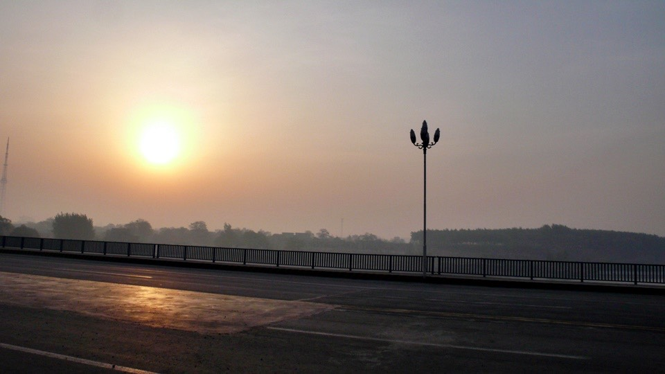
出發沒幾分鐘，就聽到後頭有打招呼的聲音，回頭一看，原來也是一個騎自行車旅行的人。
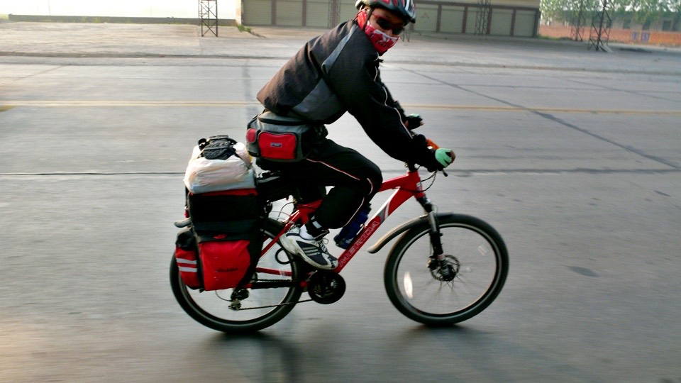
他叫李繼民，從河南的鄭州騎到北京，來回往返只需要十天的時間，每天都騎150公里。
看他騎著美利達的自行車，想必有兩下子，果然他這次去北京，除了去玩之外，
就是因為美利達有贊助，可以拿些小禮物，所以騎這一趟。
看他一派輕鬆的樣子，和一身火紅的行頭，我想他應該是個年輕小夥子吧，
所以就倚老賣老的跟他說我27歲，不知道你幾歲？
『我40啦～兒子都有了。』
哇哩，這位大叔你保養的真好！
『不是保養的好，是包的好。』
的確，看他臉上那一條像是口罩的東西，把整個臉都包了起來，這樣就不用怕風沙和髒兮兮的臉了。
有點羨慕那個東西，但既然沒有帶到就算了。
本來想趁著一大清早涼快多騎一些路，所以故意騎很快的超過他。
『我先走啦～今天還得騎到鄭州呢。』
結果沒三分鐘就換他把我幹掉，我只好說我想慢慢騎欣賞路上的風景，
『李大哥你先走吧~_~』
路上遇到很誇張的塞車，一堆卡車、三輪車通通塞在路上，然後大家就往旁邊的泥路鑽，
結果更塞，根本沒地方讓我騎車，只好下車用牽的，在泥灰滿天飛的情況下牽車，
牽著幾百公尺，原來前面是一個『卜』字路口，兩邊的車子都很多，但是誰也不讓誰，所以就通通卡死在路口，
後面這個大塞車的死結，不知道要多久才可以解的開。
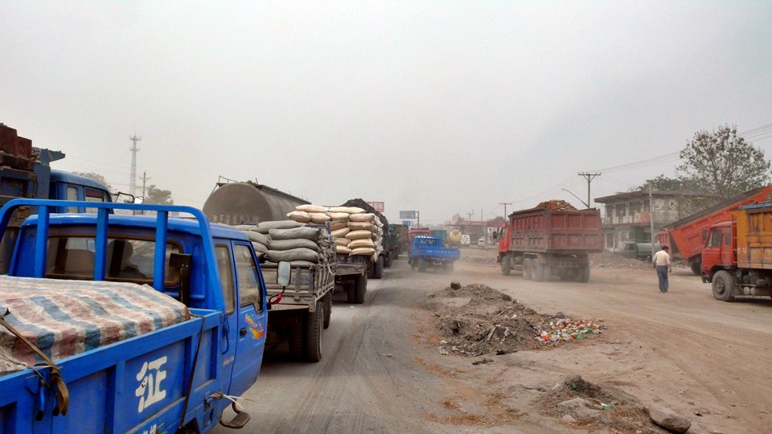
有些牽引機載著一大堆的乾稻草，從後面看只看到一個正方形的稻草堆在移動，很有喜感。
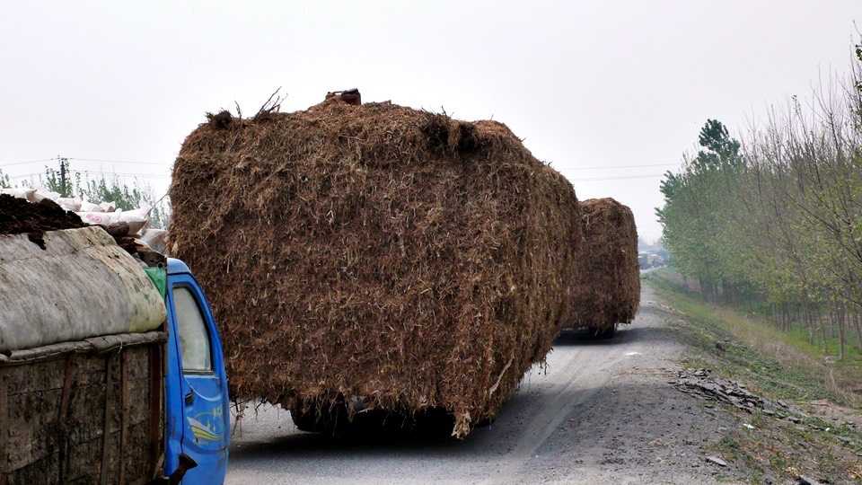
騎了好幾天的107國道，今天突然消失了，不知不覺我就騎在『新鄭一級路』上。
聽這個名字，想比就是新鄉通往鄭州的道路，但是『一級路』是什麼東西呀？@@"
英文翻譯成『First Class Highway』，難道是高速公路嗎？
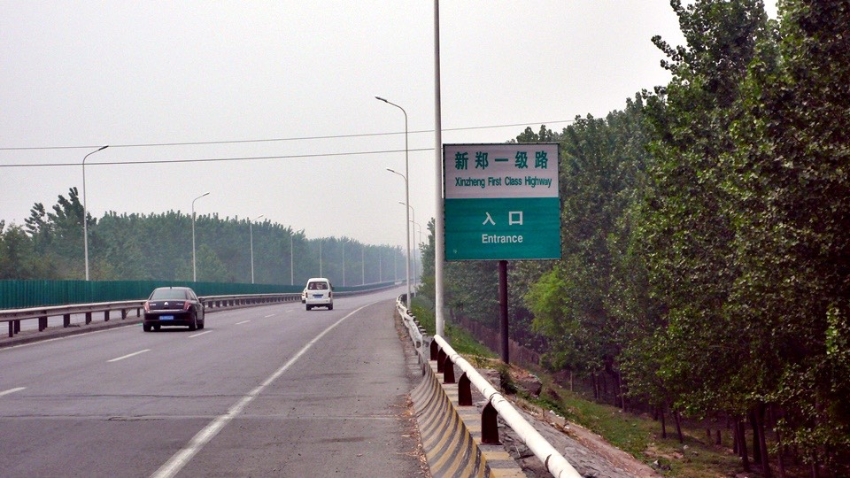
看著道路兩旁突然出現的護欄，還有每大概十公里就會出現『出口 EXIT』的告示牌。
甚至騎到一半，還出現休息站~_~
難道我又不小心騎上高速公路了嗎？
雖然覺得八九不離十，可是既然沒有人攔我，在這一條怎麼看都像是高速公路的路上面，
唯一支持我繼續勇敢騎車的，就是因為沒看到禁行腳踏車的告示牌。
也許中國是最適合單車旅行的國家，在中國，除了高速公路和鐵路之外，
所有的道路都可以騎自行車暢行無阻。
有些路會禁止三輪車、馬車、牽引機、摩托車、卡車、人力車，但就是沒看過有道路禁止腳踏車騎乘的。
和昨天一樣，是個吹著微微逆風的天氣，在這個一級路上，由於我沒有從任何出口下去，
所以今天就會從旁邊經過新鄉，然後直接往目的地鄭州邁進。
在這個一級路上面，除了出口之外，都沒有其他的店家和小販，所以我沒有東西可以吃，
中午十二點整，正好騎到新鄉休息站，就在這偌大有點像是廢墟的寂寞休息站，
和看起來比我還顯得昏昏欲睡的小姐，點了十元的快餐，可以點一樣葷菜、兩樣素菜，
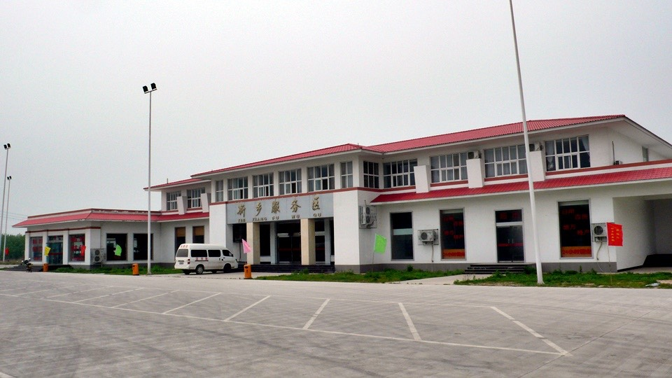
端著餐盤坐到離小多最近的桌子那，正準備要開動的時候，
昏昏欲睡的服務生又補了一句『你別把菜渣吐在地上呀～』
我是不是看起來真的那麼邋遢呀@"@
為什麼要特別叮嚀我不要把菜渣吐在地上，我像是會把菜渣吐在地上的人嗎？
回過頭跟她苦笑一下，就吃起我的午餐來了。
照這個速度，如果這個一級路真的可以騎自行車，而我也不會被公安攔下來的話，
那今天下午五點之前肯定能到的了鄭州，一個在中國中部，算是很大的城市。
到這邊之後，隔天我可以有一整天的休息時間，到處晃晃趴趴走、甚至睡一整天的覺恢復體力也行。
下午三點半，騎到了黃河大橋。
這時才想到，我昨天從河北騎到河南，既然是河的兩岸，那怎麼沒看到河呢？~_~
上黃河大橋之前，居然出現了禁止行人和禁止自行車的標誌，問了問站在橋頭的哨兵，
『請問我騎自行車該怎麼過去？』用手比了比那兩個禁止我和小多通行的標誌。
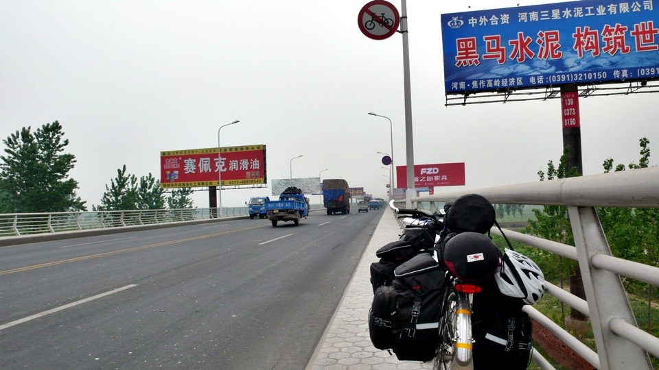
哨兵很酷，他怎麼看都像是中國人，但是講起話來很像是西班牙人說中文的感覺。
難道河南腔就是學外國人說中文就行嗎，這樣的話還不算太難模仿呢。
哨兵說，這個橋上路比較小，車子很多而且都開很快，你別再騎了。很危險。
哇哩，叫我別再騎，那要怎麼辦，有別的路讓我過黃河嗎？難道要我用牽的牽過去？@"@
我心裡的OS，居然就是解決的方法，雖然黃河大橋禁止行人和自行車，但是不禁止行人牽著自行車通行。
我搞不太懂這個很詭弔的邏輯，但既然哨兵這麼說了，那我就這麼做吧。
牽著自行車走在橋的邊邊，橋下種的都是小麥，
騎了這麼多天自行車，路旁的田裡，種的全部都是小麥。
遠遠的看跟稻子沒什麼差別，近一點看就會發現田裡是乾的，不像水稻一樣是水田才能耕種。
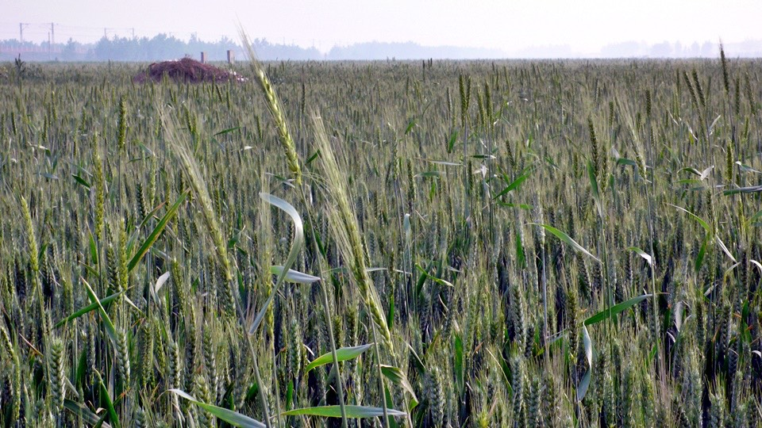
望著一望無際的小麥田無限延伸，好長好長的橋，用牽的不知道要牽到什麼時候才走的完，
所以牽了半個小時，我就改用騎的，一樣騎在橋的邊邊，穩穩的移動著。
心裡想著黃河一定很大一條吧，一定是波濤洶湧的河水，轟轟滾滾的向東入海流，
一定是站在黃河的這一岸，卻看不到河岸的另外一邊，那麼樣大的一條河。
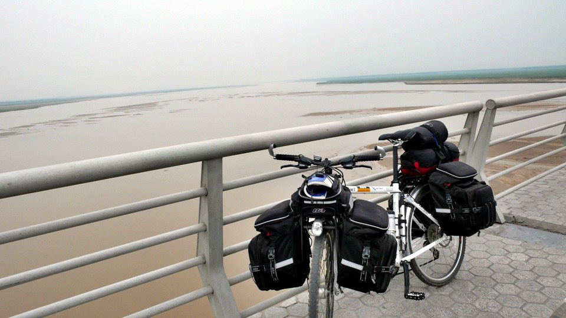
實際看到的時候，雖然真的蠻大的，但是比我想像中仍是迷你了一點。
可是河水真的好黃好黃，都是泥沙，黃河兩岸那些小麥田，想必都是黃河的泥沙所淤積出來，最肥沃的土地吧。
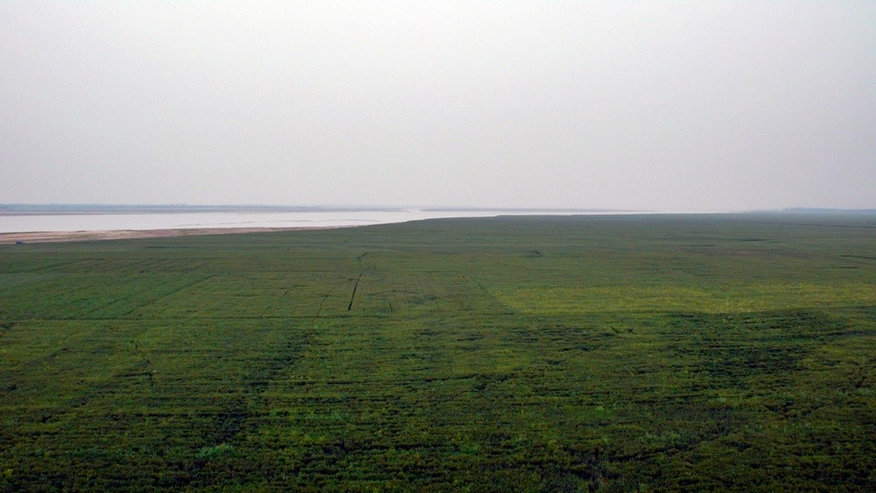
過了黃河，就是鄭州市了，騎在花園路上，有點歐洲大道的感覺，
可以感覺到很用心的想把鄭州規劃成中部的大城市的氣度，是一個會讓人喜歡的地方。
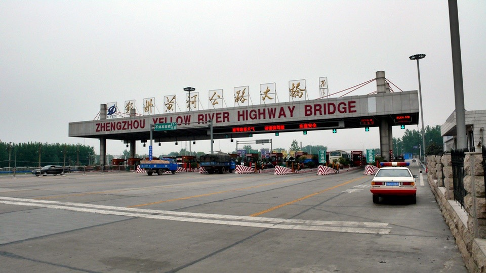
悠哉的看看有沒有旅館的招牌，很幸運的找到旅館街。
街上大聲播放著台灣的流行音樂，青少年在街上打撞球，路人不再對我大驚小怪，
找到一間很舒適的房間，房價是30元，因為房間很舒服，所以就這麼住下了，連住兩個晚上。
住一天是30塊，住兩天則是55塊，便宜五塊倒也不錯。
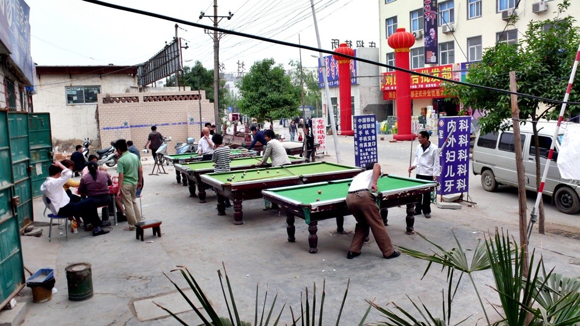
小多的前貨架有一個螺絲已經鬆脫，而且沒辦法鎖回去，因為車架的洞裡面的紋路已經磨損了。
明天得找一間電銲的地方，請師父把小多前後貨架有螺絲的部分都焊接起來，這樣將來騎乘也比較令人安心。
晚上在這邊的夜市吃晚餐，一樣是夜市，感覺跟台灣的幾乎沒什麼兩樣，比較大的差異就是價錢便宜這一點吧，
還有賣吃的小販實在太多了，一路這麼走，每個都想吃真的很掙扎，
最後選了一間千里飄香餛飩，大碗的3塊錢，端上來有臉盆那麼大，裡頭滿滿都是餛飩，
難怪旁邊的女店員包餛飩包的那麼快，因為包太慢的話根本來不及煮給客人吃。
這一碗大碗的餛飩湯，吃一顆就默數一個數字，最後一共有25顆餛飩(撐)。
回去之前，再買一個至少有一公斤重的烤番薯(3塊)，回去當配電視&書的點心，
晃夜市的時候發現一間網吧，明天沒事的話就可以在這邊殺時間，前提就是先將小多給補強好再說～
真慶幸有在旅途中安排空檔日*^^*
明天就來個黃河一日遊吧！
繼續閱讀：4.30 黃河半日遊
中國-人民幣－ 1：4.3 台幣
4.29
總計：47元
午餐一葷二素快餐10元、鳳梨1元、住店30元、晚餐餛飩湯3元、點心烤番薯3元